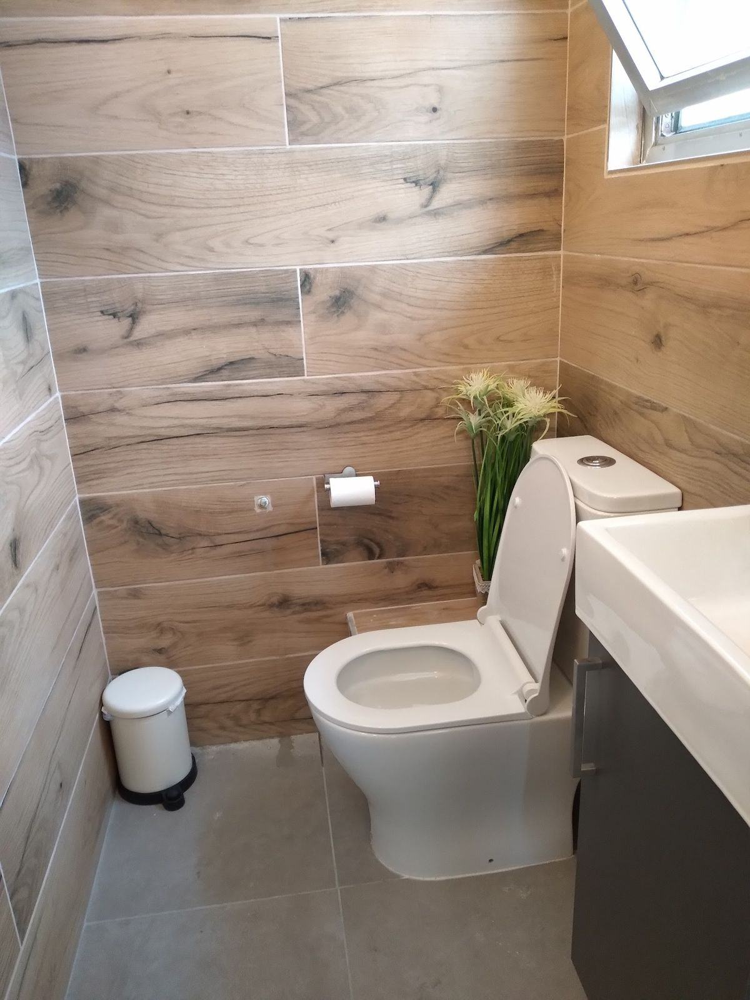
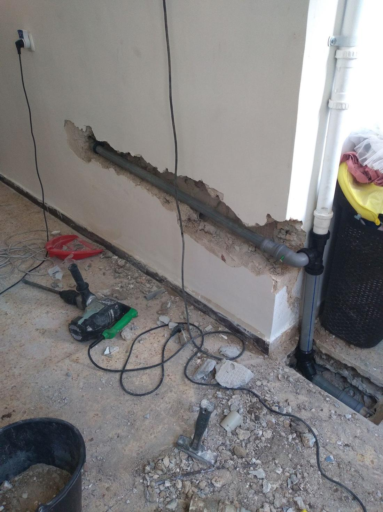
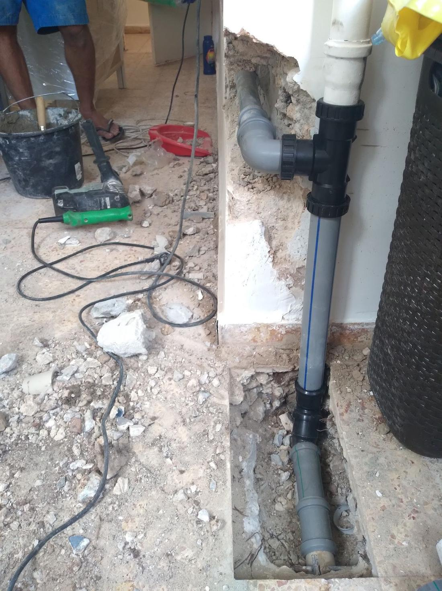
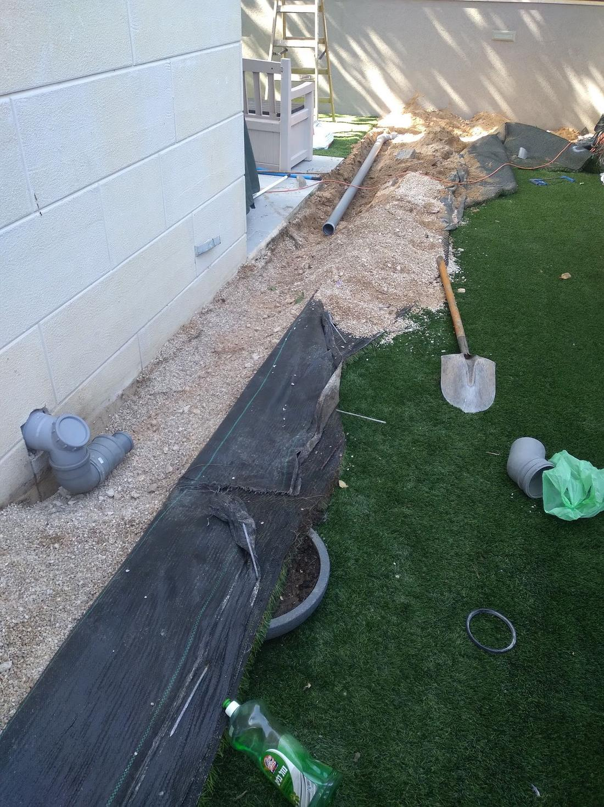
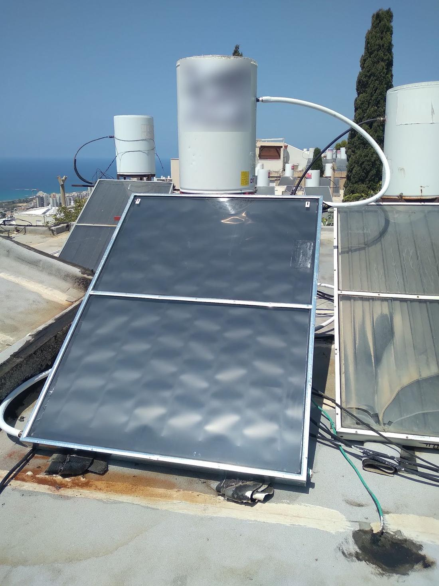

יורם האינסטלטורYoram the Plumber מה שמאחורי הקיר.behind the wall.
צנרת מים וביוב, חדרי רחצה ודודי שמש, בקריות ובחיפה. דור שני בתחום.Water and sewer pipes, bathrooms and solar water heaters, in the Krayot and Haifa. Second generation in the trade.

דור שני בצנרת.Second generation in pipes.
למעלה מ-20 שנה בעבודות אינסטלציה, דור שני בתחום. מהסתימה בכיור ועד הדוד שעל הגג.Over 20 years of plumbing work, second generation in the trade. From the blocked sink to the heater on the roof.
- עסקBusiness
- יורם אינסטלטור בקריותYoram the Plumber, Krayot
- כתובתAddress
- דרך עכו 102, קריית ביאליק102 Derech Akko, Kiryat Bialik
- אזורArea
- הקריות וחיפהThe Krayot and Haifa
- טלפוןPhone
- 052-376-6753
מהקיר ועד הגג.From the wall to the roof.
תמונות מעבודות של יורם.Photos from Yoram’s own jobs.




בתוך הקירInside the wall
צינור חדש מונח בחריץ, לפני שהקיר נסגר.A new pipe laid in the channel, before the wall is closed.
מתחת לרצפהUnder the floor
קו הניקוז יורד אל מתחת לרצפה.The drain line goes down under the floor.
בחצרIn the yard
תעלה לאורך הבית, וקו חדש בדרך.A trench along the house, and a new line on its way.
בחדר הרחצהIn the bathroom
ובסוף, חדר רחצה גמור.And at the end, a finished bathroom.
על הגגOn the roof
דוד שמש וקולטים, עם נוף לים.A solar heater and collectors, with a sea view.
מה יורם עושה.What Yoram does.
הרשימה מהאתר שלו. געו בשורה כדי לראות.The list from his own site. Touch a row to see it.
בביתIn the home
צנרתPipes
על הגגOn the roof
הסתימה נפתחת, המים זורמים שוב.The blockage clears, the water runs again.
חדר רחצה מעבודות יורם.A bathroom from Yoram’s work.
קרמיקה בדמוי עץ, מאותה עבודה.Wood-look tiles, from the same job.
הקטע שנפגע מוחלף, והקו נסגר.The damaged section is replaced and the line is closed.
צנרת חדשה בתוך הקיר, מעבודה של יורם.New pipes inside the wall, from Yoram’s work.
המחוג עולה, והלחץ בברזים משתנה.The needle climbs and the pressure at the taps changes.
איתור הנזילה בתוך הקיר, עם מצלמה תרמית.Finding the leak inside the wall, with a thermal camera.
דוד וקולטים על גג, מעבודות יורם.A heater and collectors on a roof, from Yoram’s work.
מה כתבו עליו.What people wrote.
יורם האינסטלטור מומלץ ביותר החליף לי את צנרת המים בדירה עשה עבודה טובה נקיה עמד בזמנים מומלץ
Yoram the plumber, highly recommended. He replaced the water pipes in my flat, did good clean work, kept to the schedule. Recommended.
5
מומלץ בחום יורם האינסטלטור מקצועי נחמד זמין בטלפון ומגיע בזמן עשה עבודה טובה השאיר נקי אחריו מומלץ
Highly recommended, Yoram the plumber: professional, nice, available by phone and comes on time, did good work, left it clean after him. Recommended.
5
מומלץ,הגיע בזמן מקצועי,השאיר נקי ומסודר אחריו, ממליץ בחום על יורם האינסטלטור בקריות
Recommended, arrived on time, professional, left it clean and tidy after him. I warmly recommend Yoram the plumber in the Krayot.
5
כתבו ליורם.Write to Yoram.
סמנו מה צריך ואיפה. ההודעה נכתבת לבד ונשלחת בוואטסאפ.Tick what’s needed and where. The message writes itself and goes by WhatsApp.
- מה צריךWhat
- איפהWhere
- שליחהSend
שאלות קצרות.Short questions.
קריית ביאליק, קריית מוצקין, קריית חיים, קריית ים וקריית אתא, וגם בחיפה.Kiryat Bialik, Kiryat Motzkin, Kiryat Haim, Kiryat Yam and Kiryat Ata, and Haifa too.
כן. התקנה ושירות לדודי שמש ולדודי חשמל מופיעים ברשימת השירותים שלו.Yes. Installing and servicing solar and electric water heaters is on his list of services.
באתר שלו כתוב שיורם מאתר נזילות בעזרת מצלמה תרמית.His site says Yoram finds leaks with a thermal camera.
כן, שיפוץ חדרי אמבטיה ועבודות קרמיקה נמצאים ברשימה שלו.Yes, bathroom renovations and tiling are on his list.
בגוגל העסק רשום כפתוח 24 שעות, כל ימות השבוע. אפשר להתקשר או לכתוב בוואטסאפ.On Google the business is listed as open 24 hours, every day. Call or write on WhatsApp.